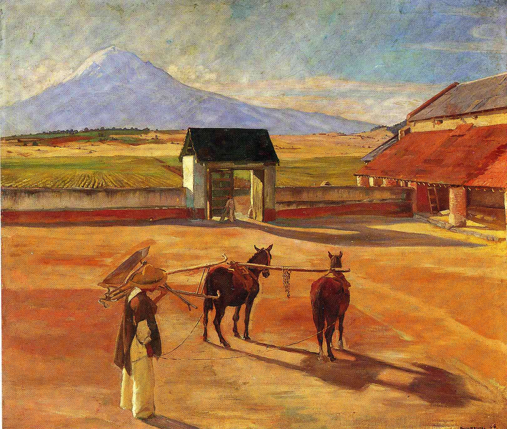

Tags: nan
Style: Social Realism
Artist: Rivera Diego
Title: La Era (The Threshing Floor) 1904 (oil on canvas)
Year: 1904
Genre: landscape
Categories: barn (82.3%); jigsaw_puzzle (7.5%); hay (3.3%); chainlink_fence (1.9%); doormat (0.7%)
Similar Images: